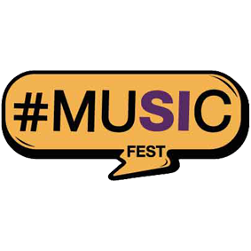

Adquirí tu entrada
DONAR A UN PROYECTO
Recorridas Nocturnas
Educación
Desarrollo Comunitario
Participación Comunitaria
Catástrofes Naturales
¿QUÉ OTRAS COSAS PUEDO DONAR?
Ropa - Comida No Perecedera - Juguetes - Útiles
Donaciones
CUMPLILE EL SUEÑO A UN NIÑO
Colaborá para hacer posible todos nuestros proyectos: Recorridas Nocturnas para la inclusión de quienes duermen en la calle; Programa de Inclusión para niños y adolescentes "Si Pueden" en comedores, hogares y centros comunitarios; Residencias Universitarias para los jóvenes de zonas rurales; Microemprendimientos, y otros. Quienes formamos Sí estamos convencidos de que transformar la realidad es posible y, para lograrlo, necesitamos el compromiso de todos.
REALIZÁ UNA DONACIÓN
Para hacer una donación de dinero hace click aquí.